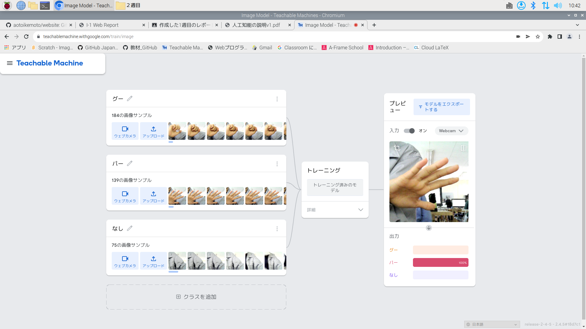
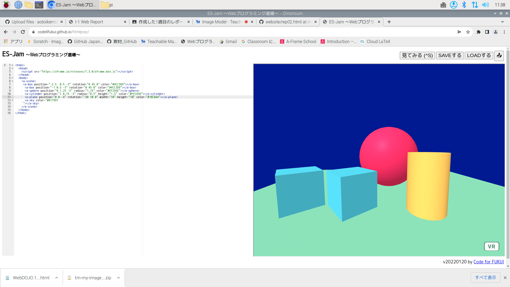

第2週目
2-1 レポートをHTMLで作る
１週目のレポート
1.内容
ホームページにレポートの内容を作成した。
2.感想
レポートのもとをコピーしてそれを編集して簡単に作ることができたので良かった。ホームページ上で作成すると、スマホなどですぐ確認できるので良いと思った。
2-2 機械学習体験

1.内容
Teachable Machineを使ってグーとパーを識別するよう学習させた。
2.感想
機械学習と聞いて難しそうに思ったが、WEBカメラを使って簡単にグーとパーを識別するようにできたので楽しかった。
2-3 JavaScript体験：３次元モデルのプログラムを作る

３次元モデル
1.内容
Webプログラミング道場を使って3次元モデルのプログラムを作った。
2.感想
立体図形の数字を変えるだけで大きさ・色・場所を変えて作ることができたので楽しかった。作ったプログラムをスマホでも見ることができ実際にVRのように動かせたので嬉しかった.